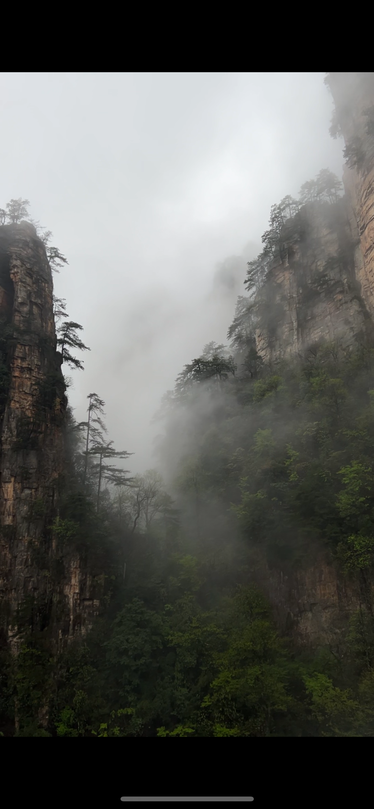

- Важная информация по главным локациямНациональный парк Чжанцзяцзе, гора Тяньмэнь, Гранд Каньон и стеклянный мост, Пещера Жёлтого Дракона.
- Цены и билетыВиды билетов и особенности их приобретения для каждой локации + актуальные цены.
- Готовые маршрутыДетальные маршруты по карте для всех основных локаций (в нескольких вариантах на выбор).
- Проживание, отели и едаГде лучше остановиться, чтобы всё посмотреть и сократить время на дорогу, рекомендации отелей, местная кухня.
- Авторские карты на русскомОтдельными файлами и в самом гайде. Общая карта местности + карты Национального парка и горы Тяньмэнь.
- Советы и рекомендацииОснованные на собственном опыте путешествия в Чжанцзяцзе личные рекомендации для Вас.
- Презентация на 50 слайдовКрасивая,содержательная и понятная инструкция в удобном формате PDF.
ОТ ИДЕИ ДО РЕАЛИЗАЦИИ
Как Вы уже, наверняка, поняли, Китай - далеко не самоё лёгкое
направление для туризма. Однако, помимо общих трудностей поездки
в Китай, при планировании своего путешествия в Чжанцзяцзе
я столкнулась с большим недостатком качественной и актуальной
информации на русском или, хотя бы, английском языке.
Все карты, которые я находила были либо на
китайском, либо настолько непонятные и неудобные,
что ориентироваться по ним было настоящей проблемой.
Учитывая, также, что в Китае в целом, и особенно
в таком маленьком городе, как Чжанцзяцзе, никто
не говорит по-английски, наше путешествие вместо
приятного приключения стало настоящим испытанием)
Поэтому я постаралась создать для Вас такой гайд,
в котором собрана вся информация, необходимая для
классного путешествия в Чжанцзяцзе, включая составленные
лично мной подробные карты на русском языке с фотографиями,
заметками и детальными маршрутами передвижения на каждый день.
Хотела бы я иметь такой гайд перед нашей поездкой...
А у Вас есть такая возможность! :)
Состав гайда:
- презентация из 50 слайдов в формате PDF
- 3 карты в формате JPG и SVG (для масштабирования без потери качества) Абсолютно всё можно скачать на телефон и пользоваться офлайн.





Остались вопросы?
Задайте мне их напрямую:
Задайте мне их напрямую:
Share